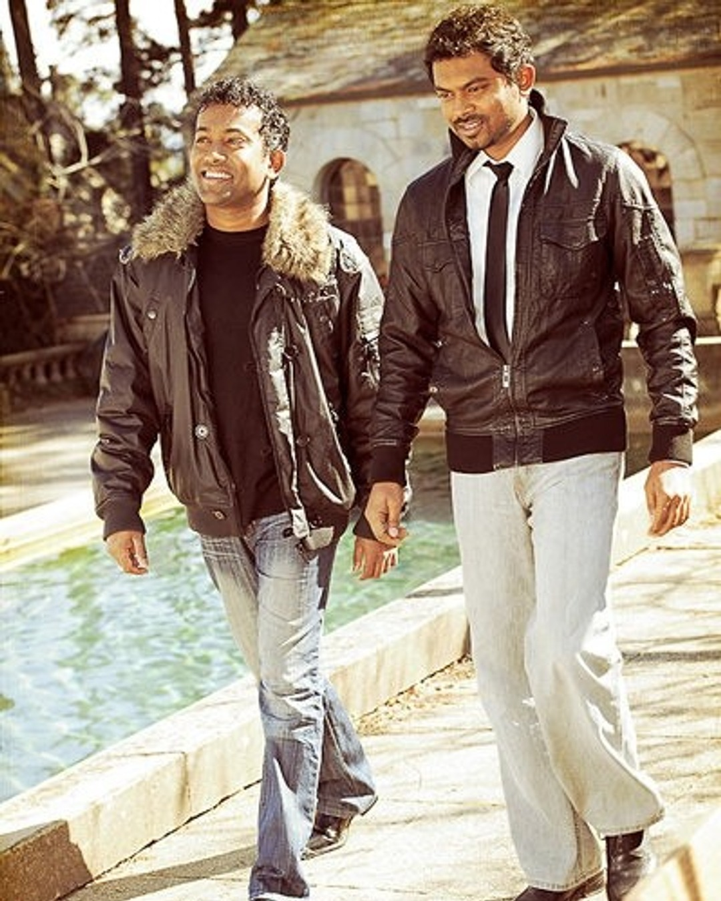

New stage moments from the weekend show. Which song should we open with next?

Tokens and components for the InrCliq feed landing (/feed) —
shell chrome, stories, filters, posts, and rails. Uses the same CSS classes as
src/components/feed and src/styles/feed.
Shared brand and semantic palette. Feed dark/light remaps these via app-theme.css.
Feed-specific variables from app-theme.css — cards, dividers, shell widths, stories.
| Token | Typical value | Usage |
|---|---|---|
--nav-width | 245px | Left sidebar |
--feed-width | 720px | Main feed column |
--right-rail-width | 280px | Suggested / trending |
--feed-card-radius | 12px / radius-md | Card rounding |
--feed-card-gap | 1rem | Stack gap |
Plus Jakarta Sans — same family as auth and feed.
4px-based scale shared with the rest of the product.
Cards and chips lean on medium/large radii; avatars use full.
Structural widths for the three-column feed shell.
| Token | Value | Usage |
|---|---|---|
--nav-width | 245px | .left-nav |
--feed-width | 720px | .feed-main / post column |
--right-rail-width | 280px | .right-rail |
.app-shell | — | Desktop 3-column frame |
.page-home | — | Body class for /feed |
Dark is the feed default. Light is opt-in via data-feed-theme="light".
Toggle the floating theme control. Feed chrome uses html[data-feed-theme] with a .feed-path-shell ancestor.
<!-- Set on <html> -->
<html lang="en" data-feed-theme="dark">
<body>
<div class="feed-path-shell">
<!-- feed app -->
</div>
</body>
</html>
/* Light mode */
<html data-feed-theme="light">…</html>{/* Set on <html> */}
<html lang="en" data-feed-theme="dark">
<body>
<div className="feed-path-shell">
{/* feed app */}
</div>
</body>
</html>
/* Light mode */
<html data-feed-theme="light">…</html>Shared button primitives used in nav promo, create, and feed CTAs.
<button type="button" class="btn btn--primary"><span class="btn__label">Primary</span></button>
<button type="button" class="btn btn--secondary">Secondary</button>
<button type="button" class="btn btn--outline-brand btn--sm">Outline sm</button>
<button type="button" class="btn btn--warning btn--sm">Warning</button><button type="button" className="btn btn--primary"><span className="btn__label">Primary</span></button>
<button type="button" className="btn btn--secondary">Secondary</button>
<button type="button" className="btn btn--outline-brand btn--sm">Outline sm</button>
<button type="button" className="btn btn--warning btn--sm">Warning</button>
Horizontal strip at the top of /feed. Item variants are composed from three axes:
ring (gradient = unread, muted = viewed),
presence (online dot vs story-avatar--offline),
and face (image, initials, or Your Snap plus icon).
There is no separate unread / live / verified class on story items.
<section class="stories-bar" aria-label="Stories">
<div class="stories has-next">
<div class="stories-track" id="stories-track">
<!-- Your Snap + peer stories -->
<a class="story story--snap" href="#">
<div class="story-avatar-ring story-avatar-ring--muted">
<div class="story-avatar story-avatar--snap" aria-hidden="true">
<svg viewBox="0 0 24 24" fill="none" stroke="currentColor" stroke-width="2.5" stroke-linecap="round" aria-hidden="true"><line x1="12" y1="5" x2="12" y2="19" /><line x1="5" y1="12" x2="19" y2="12" /></svg>
</div>
</div>
<span>Your Snap</span>
</a>
<a class="story" href="#">
<div class="story-avatar-ring story-avatar-ring--gradient">
<div class="story-avatar" style="--story-color: #4f46e5">
<img src="https://images.unsplash.com/photo-1514525253161-7a46d19cd819?w=120&q=80&auto=format&fit=crop" alt="Taylor" />
</div>
</div>
<span>Taylor</span>
</a>
<!-- …more stories… -->
</div>
<button class="story-nav story-nav--prev" type="button" aria-label="Previous stories" disabled>
<!-- chevron -->
</button>
<button class="story-nav story-nav--next is-visible" type="button" aria-label="Next stories">
<!-- chevron -->
</button>
</div>
</section><section className="stories-bar" aria-label="Stories">
<div className="stories has-next">
<div className="stories-track" id="stories-track">
{/* Your Snap + peer stories */}
<a className="story story--snap" href="#">
<div className="story-avatar-ring story-avatar-ring--muted">
<div className="story-avatar story-avatar--snap" aria-hidden="true">
<svg viewBox="0 0 24 24" fill="none" stroke="currentColor" strokeWidth="2.5" strokeLinecap="round" aria-hidden="true"><line x1="12" y1="5" x2="12" y2="19" /><line x1="5" y1="12" x2="19" y2="12" /></svg>
</div>
</div>
<span>Your Snap</span>
</a>
<a className="story" href="#">
<div className="story-avatar-ring story-avatar-ring--gradient">
<div className="story-avatar" style={{ "--story-color": "#4f46e5" }}>
<img src="https://images.unsplash.com/photo-1514525253161-7a46d19cd819?w=120&q=80&auto=format&fit=crop" alt="Taylor" />
</div>
</div>
<span>Taylor</span>
</a>
{/* …more stories… */}
</div>
<button className="story-nav story-nav--prev" type="button" aria-label="Previous stories" disabled>
{/* chevron */}
</button>
<button className="story-nav story-nav--next is-visible" type="button" aria-label="Next stories">
{/* chevron */}
</button>
</div>
</section>| Axis | Classes | Meaning |
|---|---|---|
| Entry | story / story story--snap | Peer story vs Your Snap |
| Ring | story-avatar-ring--gradient | Unread / unviewed |
| Ring | story-avatar-ring--muted | Viewed (or snap shell) |
| Presence | default .story-avatar::after | Online green dot |
| Presence | story-avatar--offline | Hide online dot |
| Snap face | story-avatar--snap | Plus icon; forces no presence dot |
| Face | <img> or initials text | Photo vs --story-color initials |
| Chrome | .stories.has-prev / .has-next | Edge fade when scrollable |
| Chrome | .story-nav.is-visible | Show carousel chevrons |
| Chrome | .feed-header.is-stories-collapsed | Scroll-hide the bar on home |
All production combinations. Markup for each state is documented below.
story--snap + muted ring + story-avatar--snap. Plus icon; online dot is forced off.
<a class="story story--snap" href="#">
<div class="story-avatar-ring story-avatar-ring--muted">
<div class="story-avatar story-avatar--snap" aria-hidden="true">
<svg viewBox="0 0 24 24" fill="none" stroke="currentColor" stroke-width="2.5" stroke-linecap="round" aria-hidden="true"><line x1="12" y1="5" x2="12" y2="19" /><line x1="5" y1="12" x2="19" y2="12" /></svg>
</div>
</div>
<span>Your Snap</span>
</a><a className="story story--snap" href="#">
<div className="story-avatar-ring story-avatar-ring--muted">
<div className="story-avatar story-avatar--snap" aria-hidden="true">
<svg viewBox="0 0 24 24" fill="none" stroke="currentColor" strokeWidth="2.5" strokeLinecap="round" aria-hidden="true"><line x1="12" y1="5" x2="12" y2="19" /><line x1="5" y1="12" x2="19" y2="12" /></svg>
</div>
</div>
<span>Your Snap</span>
</a>Gradient ring + photo avatar. Default presence shows the green online dot.
<a class="story" href="#">
<div class="story-avatar-ring story-avatar-ring--gradient">
<div class="story-avatar" style="--story-color: #4f46e5">
<img src="https://images.unsplash.com/photo-1514525253161-7a46d19cd819?w=120&q=80&auto=format&fit=crop" alt="Taylor" />
</div>
</div>
<span>Taylor</span>
</a><a className="story" href="#">
<div className="story-avatar-ring story-avatar-ring--gradient">
<div className="story-avatar" style={{ "--story-color": "#4f46e5" }}>
<img src="https://images.unsplash.com/photo-1514525253161-7a46d19cd819?w=120&q=80&auto=format&fit=crop" alt="Taylor" />
</div>
</div>
<span>Taylor</span>
</a>Gradient ring + initials face via --story-color.
<a class="story" href="#">
<div class="story-avatar-ring story-avatar-ring--gradient">
<div class="story-avatar" style="--story-color: #6d28d9">
OR
</div>
</div>
<span>Olivia</span>
</a><a className="story" href="#">
<div className="story-avatar-ring story-avatar-ring--gradient">
<div className="story-avatar" style={{ "--story-color": "#6d28d9" }}>
OR
</div>
</div>
<span>Olivia</span>
</a>Gradient ring + photo + story-avatar--offline (hides presence dot).
<a class="story" href="#">
<div class="story-avatar-ring story-avatar-ring--gradient">
<div class="story-avatar story-avatar--offline" style="--story-color: #c026d3">
<img src="https://images.unsplash.com/photo-1492684223066-81342ee5ff30?w=120&q=80&auto=format&fit=crop" alt="Dua" />
</div>
</div>
<span>Dua</span>
</a><a className="story" href="#">
<div className="story-avatar-ring story-avatar-ring--gradient">
<div className="story-avatar story-avatar--offline" style={{ "--story-color": "#c026d3" }}>
<img src="https://images.unsplash.com/photo-1492684223066-81342ee5ff30?w=120&q=80&auto=format&fit=crop" alt="Dua" />
</div>
</div>
<span>Dua</span>
</a>Gradient ring + initials + offline.
<a class="story" href="#">
<div class="story-avatar-ring story-avatar-ring--gradient">
<div class="story-avatar story-avatar--offline" style="--story-color: #ef4444">
MC
</div>
</div>
<span>Miley</span>
</a><a className="story" href="#">
<div className="story-avatar-ring story-avatar-ring--gradient">
<div className="story-avatar story-avatar--offline" style={{ "--story-color": "#ef4444" }}>
MC
</div>
</div>
<span>Miley</span>
</a>Muted ring (story-avatar-ring--muted) + photo + online.
<a class="story" href="#">
<div class="story-avatar-ring story-avatar-ring--muted">
<div class="story-avatar" style="--story-color: #b45309">
<img src="https://images.unsplash.com/photo-1516280440614-37939bbacd81?w=120&q=80&auto=format&fit=crop" alt="Adele" />
</div>
</div>
<span>Adele</span>
</a><a className="story" href="#">
<div className="story-avatar-ring story-avatar-ring--muted">
<div className="story-avatar" style={{ "--story-color": "#b45309" }}>
<img src="https://images.unsplash.com/photo-1516280440614-37939bbacd81?w=120&q=80&auto=format&fit=crop" alt="Adele" />
</div>
</div>
<span>Adele</span>
</a>Muted ring + initials + online.
<a class="story" href="#">
<div class="story-avatar-ring story-avatar-ring--muted">
<div class="story-avatar" style="--story-color: #166534">
ED
</div>
</div>
<span>Ed S.</span>
</a><a className="story" href="#">
<div className="story-avatar-ring story-avatar-ring--muted">
<div className="story-avatar" style={{ "--story-color": "#166534" }}>
ED
</div>
</div>
<span>Ed S.</span>
</a>Muted ring + photo + offline.
<a class="story" href="#">
<div class="story-avatar-ring story-avatar-ring--muted">
<div class="story-avatar story-avatar--offline" style="--story-color: #374151">
<img src="https://images.unsplash.com/photo-1470225620780-dba8ba36b745?w=120&q=80&auto=format&fit=crop" alt="Drake" />
</div>
</div>
<span>Drake</span>
</a><a className="story" href="#">
<div className="story-avatar-ring story-avatar-ring--muted">
<div className="story-avatar story-avatar--offline" style={{ "--story-color": "#374151" }}>
<img src="https://images.unsplash.com/photo-1470225620780-dba8ba36b745?w=120&q=80&auto=format&fit=crop" alt="Drake" />
</div>
</div>
<span>Drake</span>
</a>Muted ring + initials + offline — common for viewed peers without photos.
<a class="story" href="#">
<div class="story-avatar-ring story-avatar-ring--muted">
<div class="story-avatar story-avatar--offline" style="--story-color: #8b5cf6">
JL
</div>
</div>
<span>Jennifer</span>
</a><a className="story" href="#">
<div className="story-avatar-ring story-avatar-ring--muted">
<div className="story-avatar story-avatar--offline" style={{ "--story-color": "#8b5cf6" }}>
JL
</div>
</div>
<span>Jennifer</span>
</a><!-- Carousel edge fades + nav -->
<div class="stories has-prev has-next">
<div class="stories-track" id="stories-track"><!-- items --></div>
<button class="story-nav story-nav--prev is-visible" type="button" aria-label="Previous stories"></button>
<button class="story-nav story-nav--next is-visible" type="button" aria-label="Next stories"></button>
</div>
<!-- Scroll-hide on home (applied by useStoriesScrollHide) -->
<div class="feed-header is-stories-collapsed">
<section class="stories-bar" aria-label="Stories"><!-- … --></section>
</div>{/* Carousel edge fades + nav */}
<div className="stories has-prev has-next">
<div className="stories-track" id="stories-track">{/* items */}</div>
<button className="story-nav story-nav--prev is-visible" type="button" aria-label="Previous stories"></button>
<button className="story-nav story-nav--next is-visible" type="button" aria-label="Next stories"></button>
</div>
{/* Scroll-hide on home (applied by useStoriesScrollHide) */}
<div className="feed-header is-stories-collapsed">
<section className="stories-bar" aria-label="Stories">{/* … */}</section>
</div>spotify-landing greeting plus collapsible category tabs.
<section class="feed-filters feed-filters--audio feed-filters--collapsible feed-filters--in-feed feed-landing is-expanded" aria-label="Feed categories">
<div class="feed-landing__header">
<section class="spotify-landing">
<div class="spotify-landing__greeting-row">
<a href="/feed/me" class="spotify-landing__avatar spotify-landing__avatar--live" style="--story-color: #0d9488">HI</a>
<h1 class="spotify-landing__greeting">Good morning, Hiran</h1>
</div>
</section>
<button type="button" class="feed-filters__toggle" aria-expanded="true"><!-- filter icon --></button>
</div>
<div class="feed-filters__pills-wrap">
<div class="feed-filters__track feed-filters__track--audio" role="tablist">
<span class="feed-filter-item is-active">
<button type="button" role="tab" aria-selected="true" class="feed-filter">All</button>
</span>
<span class="feed-filter-item">
<button type="button" role="tab" aria-selected="false" class="feed-filter">Music</button>
</span>
</div>
</div>
</section><section className="feed-filters feed-filters--audio feed-filters--collapsible feed-filters--in-feed feed-landing is-expanded" aria-label="Feed categories">
<div className="feed-landing__header">
<section className="spotify-landing">
<div className="spotify-landing__greeting-row">
<a href="/feed/me" className="spotify-landing__avatar spotify-landing__avatar--live" style={{ "--story-color": "#0d9488" }}>HI</a>
<h1 className="spotify-landing__greeting">Good morning, Hiran</h1>
</div>
</section>
<button type="button" className="feed-filters__toggle" aria-expanded="true">{/* filter icon */}</button>
</div>
<div className="feed-filters__pills-wrap">
<div className="feed-filters__track feed-filters__track--audio" role="tablist">
<span className="feed-filter-item is-active">
<button type="button" role="tab" aria-selected="true" className="feed-filter">All</button>
</span>
<span className="feed-filter-item">
<button type="button" role="tab" aria-selected="false" className="feed-filter">Music</button>
</span>
</div>
</div>
</section>Simple post card — author head, tags, caption, media, engagement actions.
New stage moments from the weekend show. Which song should we open with next?

<article class="post post--simple">
<div class="post-head">
<div class="post-head__author">
<div class="post-head__avatar" style="--story-color: #1241a6" aria-hidden="true">
<img src="/assets/creators/avatar.jpg" alt="" />
</div>
<div class="post-head__identity">
<div class="post-head__name-row">
<strong class="post-head__name">Bathiya & Santhush</strong>
<span class="post-head__badge"><!-- verified icon --> Verified</span>
<button type="button" class="follow-btn post-head__follow">Follow</button>
</div>
<div class="post-head__meta-line">
<span class="post-head__handle">@bathiya</span>
<time class="post-head__time">2h</time>
</div>
</div>
</div>
</div>
<div class="post__body">
<div class="post-tags"><span class="tag">Music</span></div>
<p>New stage moments from the weekend show.</p>
<div class="post-media">
<img src="/assets/creators/feed.jpg" alt="Live performance" />
<div class="post-media__play" aria-hidden="true"><span><!-- play --></span></div>
</div>
</div>
<div class="post-footer">
<div class="post-actions post-actions--engage">
<button type="button" class="post-action post-action--like is-liked" aria-pressed="true" aria-label="Like">
<!-- heart --><span class="post-action__count">12.4K</span>
</button>
<button type="button" class="post-action post-action--comment" aria-label="Comment">
<!-- comment --><span class="post-action__count">864</span>
</button>
<button type="button" class="post-action post-action--share" aria-label="Share"><!-- share --></button>
<button type="button" class="post-action post-action--save is-saved" aria-pressed="true" aria-label="Bookmark"><!-- save --></button>
</div>
</div>
</article><article className="post post--simple">
<div className="post-head">
<div className="post-head__author">
<div className="post-head__avatar" style={{ "--story-color": "#1241a6" }} aria-hidden="true">
<img src="/assets/creators/avatar.jpg" alt="" />
</div>
<div className="post-head__identity">
<div className="post-head__name-row">
<strong className="post-head__name">Bathiya & Santhush</strong>
<span className="post-head__badge">{/* verified icon */} Verified</span>
<button type="button" className="follow-btn post-head__follow">Follow</button>
</div>
<div className="post-head__meta-line">
<span className="post-head__handle">@bathiya</span>
<time className="post-head__time">2h</time>
</div>
</div>
</div>
</div>
<div className="post__body">
<div className="post-tags"><span className="tag">Music</span></div>
<p>New stage moments from the weekend show.</p>
<div className="post-media">
<img src="/assets/creators/feed.jpg" alt="Live performance" />
<div className="post-media__play" aria-hidden="true"><span>{/* play */}</span></div>
</div>
</div>
<div className="post-footer">
<div className="post-actions post-actions--engage">
<button type="button" className="post-action post-action--like is-liked" aria-pressed="true" aria-label="Like">
{/* heart */}<span className="post-action__count">12.4K</span>
</button>
<button type="button" className="post-action post-action--comment" aria-label="Comment">
{/* comment */}<span className="post-action__count">864</span>
</button>
<button type="button" className="post-action post-action--share" aria-label="Share">{/* share */}</button>
<button type="button" className="post-action post-action--save is-saved" aria-pressed="true" aria-label="Bookmark">{/* save */}</button>
</div>
</div>
</article>Default
Liked + saved
<!-- Default -->
<button type="button" class="post-action post-action--like" aria-label="Like">…</button>
<button type="button" class="post-action post-action--save" aria-label="Bookmark">…</button>
<!-- Pressed -->
<button type="button" class="post-action post-action--like is-liked" aria-pressed="true" aria-label="Like">…</button>
<button type="button" class="post-action post-action--save is-saved" aria-pressed="true" aria-label="Bookmark">…</button>{/* Default */}
<button type="button" className="post-action post-action--like" aria-label="Like">…</button>
<button type="button" className="post-action post-action--save" aria-label="Bookmark">…</button>
{/* Pressed */}
<button type="button" className="post-action post-action--like is-liked" aria-pressed="true" aria-label="Like">…</button>
<button type="button" className="post-action post-action--save is-saved" aria-pressed="true" aria-label="Bookmark">…</button>Follow / Following control used on posts and the suggested rail.
<button type="button" class="follow-btn">Follow</button>
<button type="button" class="follow-btn is-following">Following</button><button type="button" className="follow-btn">Follow</button>
<button type="button" className="follow-btn is-following">Following</button>In-feed recommendation grid (.snaps-rail) — separate from the stories bar. Tile anatomy: cover, play overlay, duration, views, creator.
<section class="rail snaps-rail" aria-label="Snaps">
<div class="rail-title">
<h3>Snaps · because you watched Dua Lipa</h3>
<a class="rail-title__link" href="#">See all →</a>
</div>
<div class="snap-grid">
<a class="snap-tile" href="#">
<img src="…" alt="" />
<div class="snap-tile__play" aria-hidden="true"><span><!-- play --></span></div>
<span class="snap-tile__duration">0:41</span>
<div class="snap-tile__overlay">
<span class="snap-tile__views">4.1M views</span>
<span class="snap-tile__creator">
<span class="snap-tile__avatar"><img src="…" alt="" /></span>
<span class="snap-tile__handle">@streetbeats · <span class="snap-tile__meta">viral</span></span>
</span>
</div>
</a>
</div>
</section><section className="rail snaps-rail" aria-label="Snaps">
<div className="rail-title">
<h3>Snaps · because you watched Dua Lipa</h3>
<a className="rail-title__link" href="#">See all →</a>
</div>
<div className="snap-grid">
<a className="snap-tile" href="#">
<img src="…" alt="" />
<div className="snap-tile__play" aria-hidden="true"><span>{/* play */}</span></div>
<span className="snap-tile__duration">0:41</span>
<div className="snap-tile__overlay">
<span className="snap-tile__views">4.1M views</span>
<span className="snap-tile__creator">
<span className="snap-tile__avatar"><img src="…" alt="" /></span>
<span className="snap-tile__handle">@streetbeats · <span className="snap-tile__meta">viral</span></span>
</span>
</div>
</a>
</div>
</section>Horizontal creator cards injected into the home feed (.audio-top-creators).
<section class="audio-top-creators" aria-label="Top creators">
<div class="rail-title">
<h3>Top Creators</h3>
<span class="audio-section__subtitle">Artists, hosts, and narrators rising this week</span>
</div>
<div class="audio-top-creators__row">
<article class="audio-top-creator-card">
<a href="#" class="audio-top-creator-card__hit" aria-label="View Billie Eilish">
<span class="audio-top-creator-card__art"><img src="…" alt="" /></span>
<span class="audio-top-creator-card__body">
<strong class="audio-top-creator-card__name">Billie Eilish</strong>
<span class="audio-top-creator-card__handle">@billieeilish</span>
<span class="audio-top-creator-card__meta">Music · 12.4M monthly</span>
</span>
</a>
<button type="button" class="follow-btn audio-top-creator-card__follow">Follow</button>
</article>
</div>
</section><section className="audio-top-creators" aria-label="Top creators">
<div className="rail-title">
<h3>Top Creators</h3>
<span className="audio-section__subtitle">Artists, hosts, and narrators rising this week</span>
</div>
<div className="audio-top-creators__row">
<article className="audio-top-creator-card">
<a href="#" className="audio-top-creator-card__hit" aria-label="View Billie Eilish">
<span className="audio-top-creator-card__art"><img src="…" alt="" /></span>
<span className="audio-top-creator-card__body">
<strong className="audio-top-creator-card__name">Billie Eilish</strong>
<span className="audio-top-creator-card__handle">@billieeilish</span>
<span className="audio-top-creator-card__meta">Music · 12.4M monthly</span>
</span>
</a>
<button type="button" className="follow-btn audio-top-creator-card__follow">Follow</button>
</article>
</div>
</section>Suggested people and trending topics beside the main feed.
<aside class="right-rail">
<section class="rail-widget">
<div class="rail-widget__head">
<h3>Suggested</h3>
<a class="rail-widget__link" href="#">See all</a>
</div>
<ul class="suggest-list">
<li class="suggest-item">
<div class="suggest-item__av" style="--story-color: #8b5cf6">JL</div>
<div class="suggest-item__body">
<span class="suggest-item__name">Jennifer Lopez</span>
<span class="suggest-item__meta">48.2M followers</span>
</div>
<button type="button" class="follow-btn suggest-item__btn">Follow</button>
</li>
</ul>
</section>
</aside><aside className="right-rail">
<section className="rail-widget">
<div className="rail-widget__head">
<h3>Suggested</h3>
<a className="rail-widget__link" href="#">See all</a>
</div>
<ul className="suggest-list">
<li className="suggest-item">
<div className="suggest-item__av" style={{ "--story-color": "#8b5cf6" }}>JL</div>
<div className="suggest-item__body">
<span className="suggest-item__name">Jennifer Lopez</span>
<span className="suggest-item__meta">48.2M followers</span>
</div>
<button type="button" className="follow-btn suggest-item__btn">Follow</button>
</li>
</ul>
</section>
</aside>Shimmer skeleton shown while filters change or the next page loads.
<div class="feed-loading" role="status" aria-label="Loading feed">
<article class="feed-loading__card" aria-hidden="true">
<div class="feed-loading__shimmer feed-loading__shimmer--head"></div>
<div class="feed-loading__shimmer feed-loading__shimmer--line"></div>
<div class="feed-loading__shimmer feed-loading__shimmer--media"></div>
<div class="feed-loading__shimmer feed-loading__shimmer--footer"></div>
</article>
</div><div className="feed-loading" role="status" aria-label="Loading feed">
<article className="feed-loading__card" aria-hidden="true">
<div className="feed-loading__shimmer feed-loading__shimmer--head"></div>
<div className="feed-loading__shimmer feed-loading__shimmer--line"></div>
<div className="feed-loading__shimmer feed-loading__shimmer--media"></div>
<div className="feed-loading__shimmer feed-loading__shimmer--footer"></div>
</article>
</div>Composed pages built with this design system.